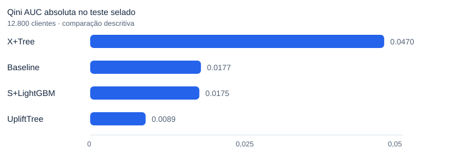
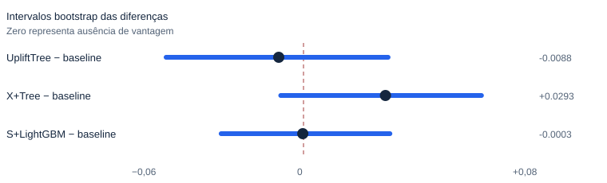
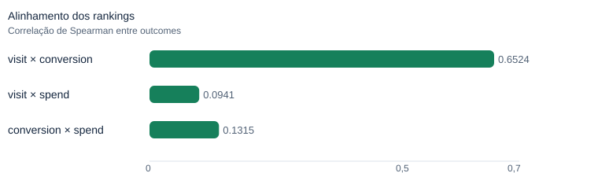

Targeting causal com evidência e limites explícitos
Uma cadeia modular para estimar quem se beneficia de uma campanha, com teste selado, comparação pré-registrada e políticas de contato sob orçamento.
64.000 clientes randomizados · 8 pares de notebooks · avaliação S6–S9 persistida
O alvo é o efeito incremental, não a propensão
Um ranking de propensão encontra quem provavelmente responderá. Uplift modeling pergunta quem responde por causa da campanha. O projeto usa o experimento randomizado Hillstrom para testar essa diferença, preservando uma fronteira de decisão conservadora.
Leitura principal: O resultado primário é nulo; a entrega defensável é um piloto prospectivo, não deployment.
A comparação primária foi congelada antes do teste
O desenvolvimento usa divisão determinística 60%/20%/20%, outcome primário visit e candidatos congelados. O S6 avaliou o UpliftTree contra o baseline de propensão no teste selado de 12.800 clientes, com 2.000 amostras bootstrap pareadas.


O intervalo inclui zero
A diferença primária foi Δ Qini AUC = −0,0088, com IC95% [−0,0492; 0,0302]. Portanto, a evidência selada não demonstra superioridade confirmatória do UpliftTree sobre o baseline. A Qini absoluta de X+Tree é descritiva e não cria um vencedor retrospectivo.
Decisão S6: ci_includes_zero → não há evidência confirmatória de vantagem.
O ranking de visitas não representa receita
A correlação de Spearman entre os rankings de visit e spend é 0,0941. As análises posteriores, políticas e ROI são exploratórias e dependem de custos e margens ilustrativos.

A narrativa está nos notebooks; a lógica está em src/
Os oito pares PT/EN reutilizam módulos para dados, features, splits, learners, avaliação, políticas e relatórios. S6–S9 consomem artefatos persistidos sem reabrir o teste selado nem escolher um champion retrospectivo.
Módulos compartilhados
src/data.py,features.py,splits.pysrc/learners.py,evaluation.pysrc/policy.py,reports.pytests/test_suite.pye artefatos S6–S9
Ordem analítica
- 01–04: EDA, baseline e candidatos
- 05: teste selado pré-registrado
- 06–09: heterogeneidade, política, ROI e robustez
- PT-BR é a edição canônica; EN-US é equivalente.
Uso permitido e limites
Pode sustentar
- Aprendizado e geração de hipóteses.
- Desenho de piloto prospectivo randomizado.
- Simulações com premissas substituíveis.
Não pode sustentar
- Superioridade confirmatória de um candidato.
- Deployment automático da política.
- ROI validado com custos ilustrativos.
Fronteira decisória: not_ready_for_direct_deployment. Antes de um piloto: congelar a política, pré-especificar o outcome, dimensionar potência, usar custos reais e monitorar fadiga, descadastros, entregabilidade e capacidade.
Fontes e reprodução
A página é uma camada de comunicação. Notebooks, módulos e artefatos versionados permanecem como fonte executável.